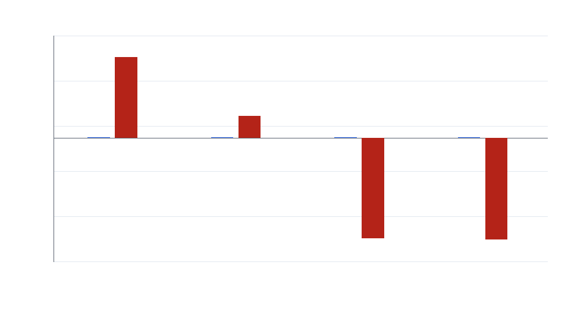
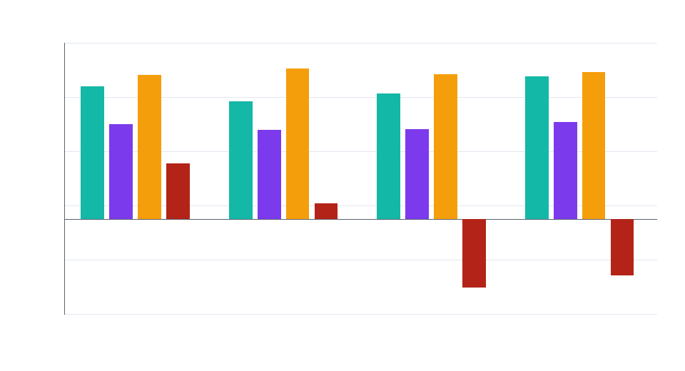
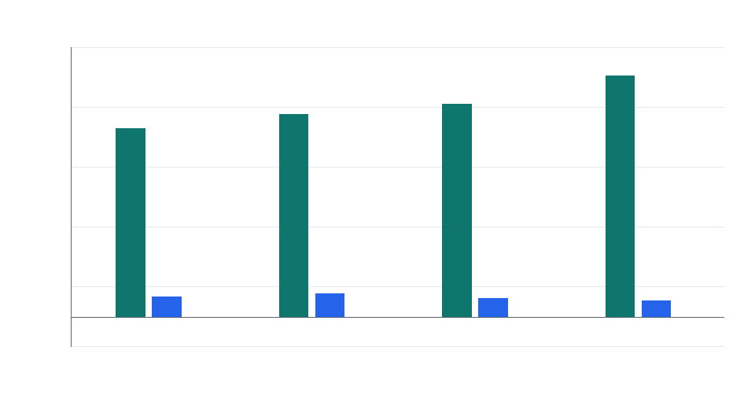

Strategy 四季度财报摘要
Executive Summary
- 软件业务有收入和毛利，但不是财报波动主角。 最新季度 Q1 2026 收入为 $124.3M，毛利率 67.1%；但数字资产未实现亏损达到 $14.46B，把净亏损推到 $12.54B。
- 剔除数字资产重估，核心经营仍然很薄。 Q1 2026 毛利扣除销售、研发、行政费用后的经营口径约为 -$14.9M，约占收入 -12.0%。
- 资产负债表几乎被 BTC 决定。 Q1 2026 数字资产账面价值 $51.65B，占总资产 95.2%；公司持有 762,099 BTC，平均成本约 $75,694/BTC。
- 投资判断要把 MSTR 当成 BTC 资本结构工具看。 软件业务提供经营底座，但股东价值、优先股信用和利润波动主要来自 BTC 价格、融资能力和资本结构管理。
收入稳定在 1.1-1.2 亿美元区间，订阅化没有抵消 BTC 会计波动
四个季度的软件收入比较平稳，真正改变利润表的是数字资产重估。 Q2 和 Q3 2025 因 BTC 公允价值收益录得大额利润，Q4 2025 和 Q1 2026 又因 BTC 未实现亏损转为巨额亏损。读 Strategy 的利润表，先看 BTC 重估，再看软件经营。

| Quarter | Revenue | Gross profit | Gross margin | Digital asset gain/(loss) | Operating income/(loss) | Net income/(loss) | Diluted EPS |
|---|---|---|---|---|---|---|---|
| Q2 2025 | $114.5M | $78.7M | 68.8% | $14.05B | $14.03B | $10.02B | $32.60 |
| Q3 2025 | $128.7M | $90.7M | 70.5% | $3.89B | $3.89B | $2.79B | $8.42 |
| Q4 2025 | $123.0M | $81.3M | 66.1% | -$17.44B | -$17.45B | -$12.44B | -$42.93 |
| Q1 2026 | $124.3M | $83.4M | 67.1% | -$14.46B | -$14.47B | -$12.54B | -$38.25 |
经营支出本身不大，数字资产损益才是利润表的巨型杠杆
销售、研发和行政费用合计通常只有数千万美元级别，而数字资产损益是十亿美元到百亿美元级别。 这导致传统软件公司的利润率框架在这里会失真：经营费用控制不是主要矛盾，BTC 价格路径才是。

资产负债表集中在数字资产，现金垫相对 BTC 规模很小
截至 Q1 2026，数字资产占总资产约 95.2%，现金只有 $2.21B。 这说明 Strategy 的偿付能力和融资信用很大程度上依赖 BTC 资产价值，而不是软件业务资产或经营现金流。
Digital assets 的变化主要是 BTC 价格变化导致的，同时也受 BTC 持仓数量变化影响。 Strategy 采用公允价值会计后，资产负债表上的数字资产基本可以理解为“期末 BTC 持仓数量 × 期末 BTC 市场价格”。例如 2025-09-30 到 2025-12-31，BTC 持仓从 640,031 枚增加到 672,500 枚，增加 32,469 枚；但数字资产账面值从 $73.21B 降到 $58.85B，减少 $14.35B。原因是隐含期末 BTC 价格从约 $114,378/BTC 降到约 $87,515/BTC，价格下跌抵消并超过了新增买入的影响。
现金从 2025-09-30 的 $54.3M 跳到 2025-12-31 的 $2.30B，主要是 Q4 建立 USD Reserve 的结果。 Q4 财报正文披露，公司在 2025 年融资 $25.30B，并建立 $2.25B USD Reserve，用于覆盖优先股股息和债务利息。两期现金增加约 $2.25B，所以这更像资本市场融资后的现金储备动作，而不是软件业务经营收入突然放大。
| Quarter end | Cash | Digital assets | Total assets | Total liabilities | Stockholders' equity | Digital assets / total assets |
|---|---|---|---|---|---|---|
| 2025-06-30 | $50.1M | $64.36B | $64.77B | $14.40B | $47.48B | 99.4% |
| 2025-09-30 | $54.3M | $73.21B | $73.62B | $15.50B | $52.33B | 99.4% |
| 2025-12-31 | $2.30B | $58.85B | $61.64B | $10.60B | $44.12B | 95.5% |
| 2026-03-31 | $2.21B | $51.65B | $54.27B | $8.63B | $36.65B | 95.2% |
Digital Assets Bridge
| Quarter end | BTC held | Digital assets | Implied BTC price |
|---|---|---|---|
| 2025-06-30 | 597,325 | $64.36B | $107,752 |
| 2025-09-30 | 640,031 | $73.21B | $114,378 |
| 2025-12-31 | 672,500 | $58.85B | $87,515 |
| 2026-03-31 | 762,099 | $51.65B | $67,773 |
Detailed Balance Sheets
Mezzanine equity 和 Stockholders' equity 都不是每股资产量，而是公司层面的总额。 Mezzanine equity 从 2025-06-30 的 $2.89B 上升到 2026-03-31 的 $8.98B，主要反映 Strategy 发行多类永久优先股后，夹层权益规模变大。Stockholders' equity 是扣除负债和夹层权益后归属于普通股股东的账面权益总额。若要得到“每股权益”或“每股资产”，还需要再除以普通股发行在外数量或稀释股数；如果分析普通股价值，还要先考虑优先股在普通股之前的分红和清偿顺序。
普通股 ATM 融资会增加 MSTR 普通股数量；STRC 发行本身不会直接增加 MSTR 普通股股数。 STRC 增加的是优先股权益、优先股股息负担，以及在普通股之前的资本结构索取权。
Preferred Shares Outstanding
优先股也有自己的股数，只是它和 MSTR 普通股股数是两套东西。 下表把原始财报中“in thousands”的优先股 issued and outstanding 转换成百万股展示。Q1 2026 财报只合并披露全部 Series A perpetual preferred stock 数量，没有在 balance sheet 中单独拆出 STRC 股数。
| Quarter end | STRC preferred shares | All preferred shares | Disclosure basis |
|---|---|---|---|
| 2025-06-30 | 0.000M | 34.033M | STRK + STRF + STRD; STRC was issued after quarter-end |
| 2025-09-30 | 28.011M | 65.887M | STRF + STRC + STRK + STRD |
| 2025-12-31 | 29.587M | 78.183M | STRF + STRC + STRK + STRD + STRE |
| 2026-03-31 | Not separately disclosed | 98.881M | Q1 balance sheet aggregates all Series A perpetual preferred stock |
| Balance sheet item | 2025-06-30 | 2025-09-30 | 2025-12-31 | 2026-03-31 |
|---|---|---|---|---|
| Cash and cash equivalents | $50.1M | $54.3M | $2.30B | $2.21B |
| Restricted cash | $2.0M | $1.9M | $1.9M | $2.0M |
| Accounts receivable, net | $117.9M | $113.4M | $205.7M | $122.3M |
| Prepaid and other current assets | $43.5M | $44.3M | $55.0M | $59.7M |
| Total current assets | $213.5M | $214.0M | $2.56B | $2.39B |
| Digital assets | $64.36B | $73.21B | $58.85B | $51.65B |
| Property and equipment, net | $30.2M | $29.9M | $28.9M | $28.3M |
| Right-of-use assets | $51.6M | $49.2M | $47.0M | $58.3M |
| Deposits and other assets | $109.7M | $114.3M | $142.6M | $136.3M |
| Deferred tax assets | $5.7M | $5.8M | $4.5M | $5.0M |
| Total assets | $64.77B | $73.62B | $61.64B | $54.27B |
| Accounts payable, accrued expenses, and lease liabilities | $44.2M | $48.7M | $50.3M | $44.7M |
| Accrued compensation and benefits | $50.1M | $44.5M | $70.0M | $33.7M |
| Accrued interest | $5.6M | $29.9M | $5.6M | $6.0M |
| Preferred dividends payable | $0.0M | $0.0M | $27.1M | $48.2M |
| Current portion of long-term debt, net | $0.3M | $0.3M | $31.3M | $31.4M |
| Deferred revenue and advance payments, current | $214.3M | $200.6M | $272.1M | $231.2M |
| Total current liabilities | $314.6M | $324.1M | $456.5M | $395.1M |
| Long-term debt, net | $8.16B | $8.17B | $8.16B | $8.17B |
| Deferred revenue and advance payments, long-term | $4.2M | $3.5M | $5.5M | $5.2M |
| Operating lease liabilities | $51.2M | $48.2M | $46.1M | $60.9M |
| Other long-term liabilities | $4.7M | $4.8M | $4.7M | $4.8M |
| Deferred tax liabilities | $5.87B | $6.95B | $1.93B | $1.4M |
| Total liabilities | $14.40B | $15.50B | $10.60B | $8.63B |
| Mezzanine equity | $2.89B | $5.79B | $6.92B | $8.98B |
| Stockholders' equity | $47.48B | $52.33B | $44.12B | $36.65B |
BTC 持仓持续上升，融资买币是主线
四个季度中 BTC 持仓从 Q2 2025 的 597,325 枚升至 Q1 2026 的 762,099 枚。 Q1 2026 当季又买入 89,599 BTC，购买成本 $7.25B。这和前面讨论的 STRC、MSTR ATM 融资机制是同一条主线：发行普通股会稀释普通股股东，发行 STRC 则更像增加一层有股息要求的优先资本。

| Quarter | BTC held | Quarter BTC purchases | Purchase cost | Average cost / BTC | Carrying value |
|---|---|---|---|---|---|
| Q2 2025 | 597,325 | 69,140 | $6.77B | $70,982 | $64.36B |
| Q3 2025 | 640,031 | 42,706 | $4.95B | $73,983 | $73.21B |
| Q4 2025 | 672,500 | 32,469 | $3.08B | $74,997 | $58.85B |
| Q1 2026 | 762,099 | 89,599 | $7.25B | $75,694 | $51.65B |
Recommended Next Steps
- 把 STRC、STRK、STRF、STRD 的发行规模和现金股息要求单独做成一张资本结构表，和现金储备比较。
- 增加 BTC 价格敏感性：例如 60,000、75,000、90,000 美元/BTC 下的数字资产价值和潜在资产覆盖率。
- 跟踪后续 ATM 发行和 USD Reserve 变化，因为它们决定优先股股息的短期安全垫。
Further Questions
- 公司未来是否继续用普通股和优先股 ATM 融资买 BTC，还是转向补充现金储备？
- 如果 BTC 长时间低于平均成本，STRC 股息率是否需要继续上调来维持接近 100 美元的交易价格？
- 软件业务订阅收入增长能否在未来提供更稳定的经营现金流，还是仍然只是资本结构故事里的小底座？
Caveats and Assumptions
本报告只使用本地目录中的四份 earnings release PDF。Q4 2025 文件包含全年和季度信息，本报告抽取的是季度利润表和期末资产负债表口径。所有财务表格单位来自原始 PDF：除 EPS 和 BTC 单价外，美元金额为 thousands，本报告展示时转换为百万或十亿美元。
Source files:
- Strategy-MicroStrategy-Q2-2025-Earnings-Release.pdf
- Strategy-MicroStrategy-Q3-2025-Earnings-Release.pdf
- Strategy-MicroStrategy-Q4-2025-Earnings-Release.pdf
- Strategy-MicroStrategy-Q1-2026-Earnings-Release.pdf